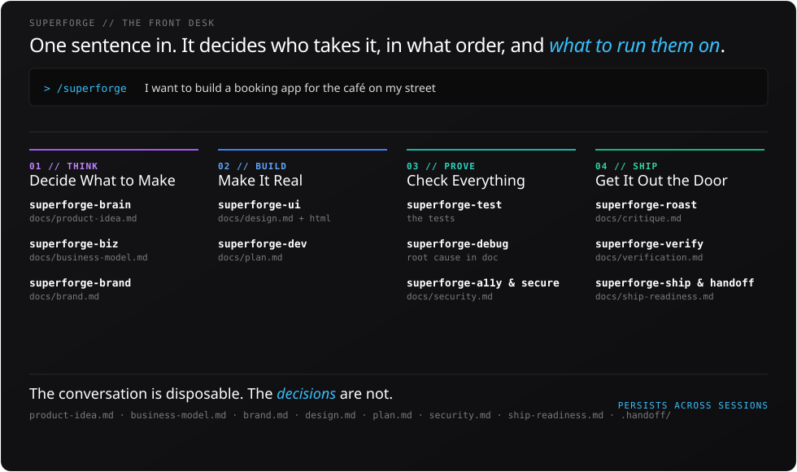
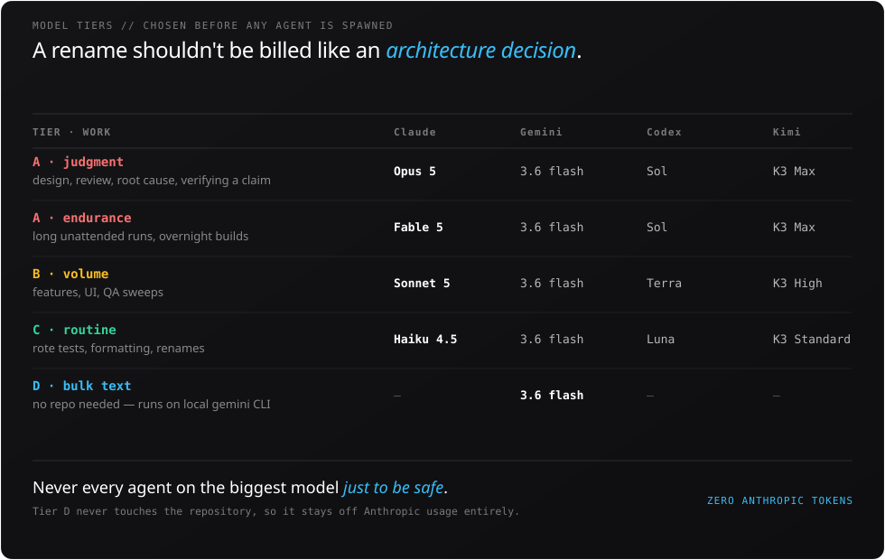

Skill system · 14 Claude Code skills · Model tieringスキルシステム · 14 の Claude Code スキル · モデルの使い分け
A multi-agent system built to make AI development repeatable.AI と一緒につくる作業を、毎回同じ質で繰り返せるようにする仕組み。
AI coding assistants lose their context the moment a session is cleared, and the quality of the output goes with it. I split development into fourteen specialist skills, gave every subtask a model sized to its difficulty, and required each skill to write its result to a file before reporting back. Rebuilding the same instructions every morning stops being part of the job — and the token bill stops paying for it.AI のコーディング支援は、セッションを消した瞬間に文脈ごと消えてしまい、出来上がるものの質も一緒に落ちます。そこで開発の工程を14 の専門スキルに分け、作業の難しさに見合ったモデルをそれぞれに割り当て、どのスキルも結果をファイルに書き出してから返すようにしました。毎朝、同じ前提を一から説明し直す作業がなくなり、その分のトークン代も払わなくて済みます。
One sentence, and where it goes一文を渡したあと、それはどこへ運ばれるのか
The whole system seen from the typing end: what you actually enter, which skill takes it, in what order, and the file each one leaves behind. Every name on the right is a file that outlives the session.入力する側から見た全体像です。実際に打ち込むもの、それを受け取るスキル、その順番、そして各スキルが残すファイル。右側に並ぶ名前はすべて、セッションより長く残るファイルです。


The figure is SVG rather than a screenshot — the labels inside it are real text, and they change language along with the rest of the page.この図はスクリーンショットではなく SVG です。図の中の文字は画像ではなく本物のテキストなので、ページの言語切り替えに合わせて一緒に変わります。
The tier is chosen before any agent is spawnedエージェントを立ち上げる前に、どの段で走らせるかは決まっている
Judgment costs more than volume, so the two are never billed the same. The bottom tier is the interesting one: work that needs no repository access runs on the local gemini CLI and consumes no Anthropic usage at all.判断は量をこなすより高くつくので、同じ値段にはしていません。面白いのはいちばん下の段です。リポジトリに触る必要のない作業はローカルの gemini CLI で走るので、Anthropic の利用量をまったく使いません。

